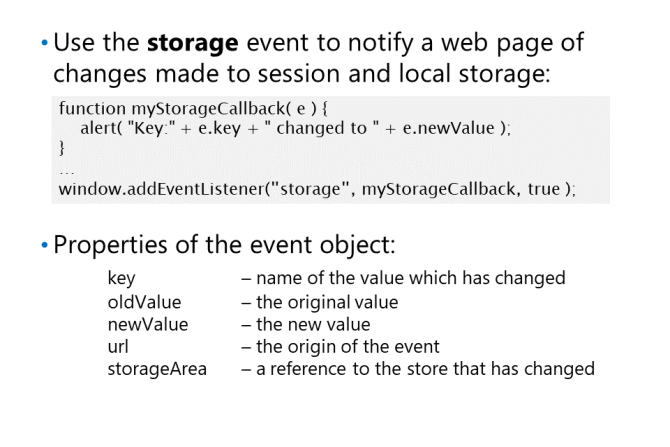

Utrwalanie danych sesji przy użyciu Session Storage
Session Storage to mechanizm przeglądarki, który może przechowywać dane tekstowe
w czasie uruchomionej przeglądarki. Jak sama nazwa wskazuje, dane
przechowywane są przez okres
bieżącej sesji użytkownika.
sprawdzenie, czy przeglądarka implementuje przechowywanie sesji.
if( window.sessionStorage ){
...
}
Pamięć sesji wiąże każdy element danych sesji z unikalną wartością klucza; podajesz tę kluczową wartość
podczas przechowywania wartości i użyj tej samej wartości klucza, aby pobrać dane. Interfejs API Session Storage zapewnia
trzy sposoby przechowywania i pobierania danych:
Funkcje setItem i getItem. Funkcja setItem wymaga podania klucza i danych. Funkcja getItem używa klucza do zwrócenia danych. Jeśli nie ma danych z określonym kluczem,
zwrócona wartość ma wartość NULL.
sessionStorage.setItem("myKey","some text value");
var textFromSession = sessionStorage.getItem("myKey");
name-key pair. Możesz użyć notacji tablicowej i określić wartość klucza jako indeks tablicowy.
sessionStorage["myKey"] = "some text value";
var textFromSession2 = sessionStorage["myKey"];
pseudo-właściwości. Możesz dodać właściwość dla każdego klucza do obiektu sessionStorage.
sessionStorage.myKey = "some text value";
var textFromSession3 = sessionStorage.myKey;
Jeśli chcesz utrwalić obiekty w pamięci sesji, szereguj je jako ciągi JSON, używając
Funkcja JSON.stringify().
Obiekty w magazynie sesji są również dostępne jako tablica elementów o długim indeksie. Możesz przetestować
length, aby dowiedzieć się, ile kluczy znajduje się w obiekcie sessionStorage. Możesz pobrać klucz do
każdy obiekt za pomocą funkcji key ().
Aby usunąć element z pamięci sesji, użyj metody removeItem(). sessionStorage.removeItem("myKey");
Aby wyczyścić magazyn sesji przed końcem sesji, wywołaj metodę clear(): sessionStorage.clear();
Utrwalanie danych w różnych sesjach za pomocą Local Storage
Local Storage umożliwia także przechowywanie elementów danych
w przeglądarce klienta, ale w przeciwieństwie do przechowywania sesji,
elementy w magazynie lokalnym są zachowywane nawet po
zakończonej sesji przeglądarki.
Interfejs API magazynu lokalnego jest bardzo podobny do interfejsu API Session Storage. Możesz przechowywać i odzyskiwać dane za pomocą
funkcje setItem () i getItem (), klucz pary nazw lub pseudo-właściwości.
localStorage.setItem("myKey","some text value");
var textData = localStorage.getItem("myKey");
localStorage["myKey"] = "some text value";
var textData = localStorage["myKey"];
localStorage.myKey = "some text value";
var textData = localStorage.myKey;
tak samo jak w Session Storage można użyć pętli odczytującej elementy / tak samo z usuwaniem
Podobnie jak w przypadku interfejsu API do przechowywania sesji, powinieneś
szeregowac obiekty jako tekst za pomocą funkcji JSON.stringify() przed ich zapisaniem.

Eventy Storage
Poniższy przykład pokazuje, śledzenie zmian w Storage.
Przechowywanie danych strukturalnych za pomocą interfejsu API indeksowanej bazy danych
Indeksowany interfejs API bazy danych lub IndexedDB,
zapewnia wydajny mechanizm przechowywania,
pobieranie i wyszukiwanie przechowywanych danych strukturalnych
lokalnie na urządzeniu z przeglądarką.
Przechowujesz dane w nazwanej bazie danych; łączysz się
do bazy danych poprzez utworzenie obiektu żądania, który
odwołuje się do funkcji open(). Jeśli baza danych
nie istnieje, tworzy ją funkcja open().
Interfejs API IndexedDB jest asynchroniczny i używasz
Zdarzenie onsuccess, aby przechwycić wartość zwróconą przez
funkcje takie jak open(). Jeśli funkcja zawiedzie, możesz określić przyczynę niepowodzenia, obsługując
zdarzenie onerror. Poniższy przykład pokazuje, jak otworzyć bazę danych i uzyskać odwołanie, które możesz
używać do przechowywania i pobierania danych. Zmienna db zawiera odniesienie do bazy danych, jeśli jest otwarta
z powodzeniem:
Baza danych zawiera jedną lub więcej składnic obiektów, które są analogiczne do tabel w relacyjnej bazie danych. ty
zdefiniuj składnicę obiektów za pomocą funkcji createObjectStore(); określasz obiekt, który chcesz dodać do
przechowuj wraz z nazwą właściwości klucza, której API IndexedDB może użyć do pobrania obiektu.
Poniższy przykład tworzy magazyn obiektów do przechowywania danych uczestników konferencji. Obiekt
store został zainicjowany danymi pierwszego uczestnika - Rachel Valdez. Właściwość id jest kluczem do
magazyn obiektów:
Za pomocą funkcji add () można przechowywać dodatkowe rekordy w magazynie obiektów. Następny przykład dodaje
szczegóły dla Erica Gruber do store. Zauważ, że funkcja add () jest asynchroniczna:
Aby zmodyfikować istniejący rekord, użyj funkcji put() w następujący sposób:
Możesz użyć funkcji delete(), aby usunąć obiekt ze składnicy obiektów. Podaj klucz obiektu
jako parametr. Jeśli nie ma pasującego obiektu, zgłaszane jest zdarzenie błędu:
Aby znaleźć dane w magazynie obiektów, możesz użyć funkcji get () i podać klucz obiektu do
odzyskać. Ponownie, jeśli nie ma pasującego obiektu, wystąpi zdarzenie błędu: